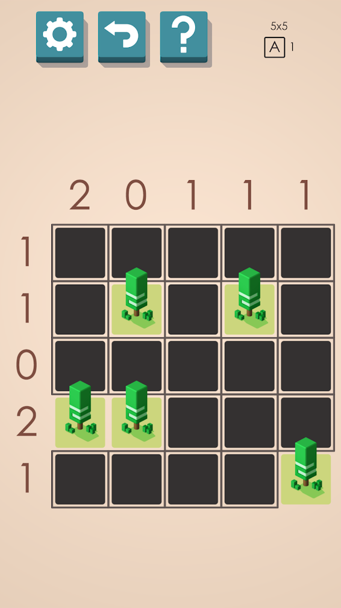

| 1) Your goal is to place one tent next to each tree. |
| 2) All spaces that don't have a tent or a tree should have grass. |
| 3) Each tent must be directly adjacent to a tree (no diagonals). |
| 4) Tents cannot touch each other (not even diagonally). |
It's dead simple and, if you enjoy games like sudoku, a lot of fun. Here is level one, both as it begins, and mostly solved:


The puzzles really lend themselves to algorithmic thinking. For example, once you've determined where to place a tent, you can follow this algorithm to make sure you fill up as many grassy spaces as possible:
| 1) Place a tent. |
| 2) Place grass in every space around the tent (including diagonals) |
| 3) If the number of tents in the row is equal to the row hint, fill the rest of the row up with grass. |
| 4) If the number of tents in the column is equal to the column hint, fill the rest of the column up with grass. |
Maybe you can see where this is going. I've had nothing better to do this weekend, so I took this way too far and implemented a "Tents and Trees Solver", then measured the algorithms for efficiency.
First, let's store a level in memory. I'm going to do a super simple encoding - integers for the hints, spaces for empty spaces, and "T" for the trees. As the game progresses, we can use "C" for the campsites and "G" for grass.
A 2D array is an okay representation. It's certainly intuitive, and it makes interacting with rows very easy. There is one obvious shortcoming - how do I interact with columns? - but I can deal with that later. Here's what level one looks like:
level_one = [
[" ", "2", "0", "1", "1", "1"],
["1", " ", " ", " ", " ", " "],
["1", " ", "T", " ", "T", " "],
["0", " ", " ", " ", " ", " "],
["2", "T", "T", " ", " ", " "],
["1", " ", " ", " ", " ", "T"]
]
I'm going to write some test code, to define the way that I want to interact with a level in code, then see if I can code to match that. Something like:
l1 = level(level_one)
for row in l1.rows:
if row.hint == "0":
grassify(row)
for tree in l1.trees:
if tree.has_tent():
continue
if tree.count_free_spaces() == 1:
l1.place_tent(tree.get_free_spaces())
I've implemented some of those functions here, but I ran into some complications. Namely:
| 1) Using a 2D array makes representing columns unintuitive. |
| 2) Trees need to know information about the level, but I don't want to have a super leaky abstraction. |
I will move ceaselessly forward and take on these complications - later, though. The weekend is over. For now, check out the before and after of that 'grassify' function:
('1', [' ', ' ', ' ', ' ', ' '])
('1', [' ', 'T', ' ', 'T', ' '])
('0', [' ', ' ', ' ', ' ', ' '])
('2', ['T', 'T', ' ', ' ', ' '])
('1', [' ', ' ', ' ', ' ', 'T'])
('1', [' ', ' ', ' ', ' ', ' '])
('1', [' ', 'T', ' ', 'T', ' '])
('0', ['G', 'G', 'G', 'G', 'G'])
('2', ['T', 'T', ' ', ' ', ' '])
('1', [' ', ' ', ' ', ' ', 'T'])